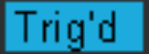

Quad Oscilloscope@192.168.30.82
- Please check that the traces are NOT frozen.
-
Hint: the triggering status inside
the orange box would toggle between
 and
.
- If they are not updating:
Don't panic yet! The scope is in Normal mode, it is not triggering if
the pulse is below threshold or quad/kicker stops pulsing.

Timestamp